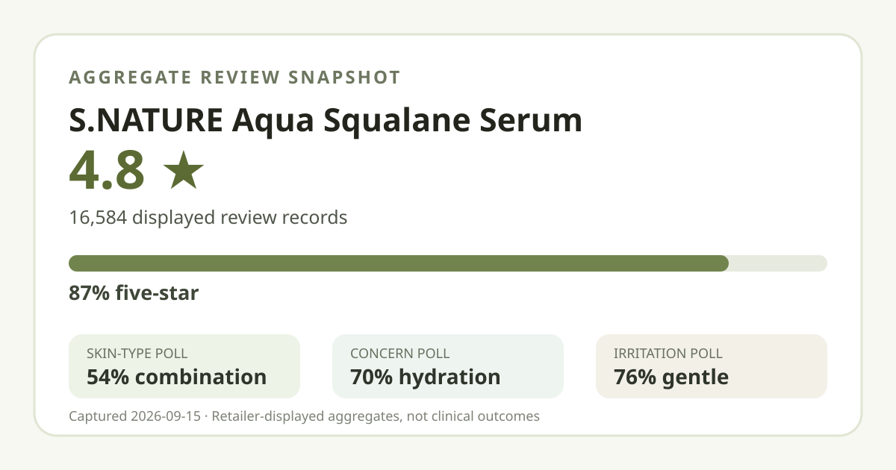
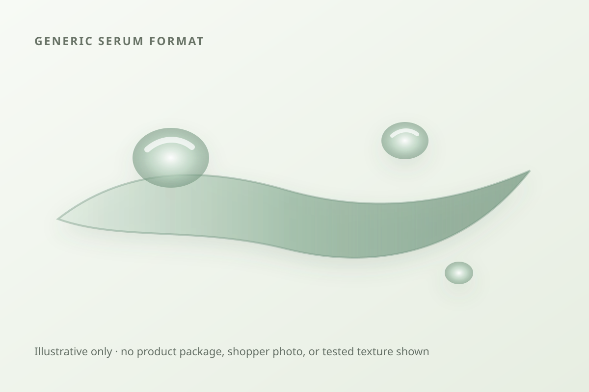

Aggregate data captured September 15, 2026. This article uses only the product title, offer, rating, rating distribution, and survey shares displayed on Olive Young Korea. It does not reproduce or translate an individual review, reviewer name, or user photo.

The short version: the listing averaged 4.8 stars across 16,584 review records. Five-star ratings accounted for 87% of the displayed distribution. Combination skin was the largest skin-type response at 54%, hydration was the leading concern response at 70%, and 76% selected the gentle response.
The average displayed rating was 4.8 out of 5. The detailed distribution showed 87% five-star, 10% four-star, 3% three-star, 0% two-star, and 1% one-star. Those retailer-displayed percentages total 101% because each share is rounded. They should not be converted into exact record counts or quietly forced to total 100.
The high-rating concentration is a useful description of storefront sentiment. A base of more than sixteen thousand records is less sensitive to one unusual rating than a tiny sample would be. It still is not a controlled study, an independently verified unique-buyer count, a repurchase rate, or a promise that a new buyer will share the majority view. The listing can also connect records collected across earlier configurations, so the aggregate cannot validate every extra in the current set.
The captured skin-type poll displayed 54% combination, 37% dry, and 8% oily. Combination skin was the largest group, while dry skin also formed a substantial share. Oily respondents were much less represented. The rounded values total 99%, another reminder that these are display shares rather than exact participant counts.
Representation is not product fit. The 54% figure does not mean the serum works for 54% of combination-skin users, and the 37% figure is not a hydration success rate for dry skin. The page did not expose a separate denominator for this poll. Climate, routine, application amount, concurrent products, sensitivities, and the reason each person selected a label were not controlled.
The separate concern poll showed 70% hydration, 28% soothing, and 1% wrinkle or brightening. These rounded shares total 99%. Hydration clearly led the displayed categories, which helps explain what concern was most represented in this feedback pool. It does not show that 70% measured an improvement in skin hydration or that the formula caused one.
The 28% soothing response likewise is not evidence that the serum treats irritation, redness, acne, eczema, or another condition. The 1% wrinkle or brightening response is too small to make that category central to this snapshot, but it also should not be treated as proof of absence. No instrument reading, standardized before-and-after photograph, control group, treatment protocol, or independent clinical assessment was part of the retailer aggregate reviewed here.
The irritation poll displayed 76% gentle, 24% ordinary, and 1% felt irritation. Rounded shares total 101%. Gentle was the leading answer, but the figure describes respondents' selected perceptions. It is not an adverse-event rate, allergy test, dermatologist assessment, or safety certificate.
The separate poll denominator was not displayed. Individual tolerance can differ with ingredient sensitivities, barrier condition, dose, frequency, other actives, and the regional formula. If a known allergy, diagnosed condition, prescription routine, or prior serious reaction is relevant, the current ingredient list and qualified guidance matter more than a storefront majority.

Only a category-level description is responsible here. A serum is generally a leave-on liquid or gel-like step intended to spread in a thin layer, but that broad format says nothing reliable about this product's exact viscosity, slip, tack, richness, scent, absorption speed, residue, pilling, or makeup compatibility. I did not open, apply, smell, spread, or wear it.
The local visual is deliberately brand-neutral and code-drawn. It illustrates a generic translucent serum format without copying the retailer's packaging, product photos, or shopper images. The product name contains “Squalane,” but a name alone does not establish ingredient concentration, purity, sourcing, mechanism, or clinical effect. Exact use amount, frequency, routine order, warnings, and compatibility should come from the current regional label.
At capture, the Korean listing displayed a ₩35,000 reference price and a ₩20,900 promotional price. The title described a 50 ml serum with a 50 ml refill and a pouch. This is a bundle price, so comparing it with a standalone bottle requires checking the exact amount and whether the refill format is useful to you.
Promotions, gifts, stock, taxes, shipping, seller, and regional configuration can change. The captured amount is a dated Korean-market reference, not a current quote or savings guarantee. A pouch has no review-data value by itself, and it should not make a poor formula fit look better. Compare the final checkout total, usable serum volume, refill compatibility, and return terms for the exact listing you would buy.
This capture did not preserve a complete current ingredient list or verified directions. It therefore does not support an estimate of squalane content, fragrance status, alcohol status, active concentration, comedogenicity, pregnancy suitability, or regional formula equivalence. The rating and polls cannot fill those gaps.
Combination skin was the largest displayed response at 54%, and dry skin followed at 37%. This makes those groups well represented in the poll, but it does not prove the serum performs better for either one.
No. Hydration was the concern label selected most often. It was not an objective measurement of moisture level, duration, or a change caused by the product.
The gentle response led at 76%, while 1% selected felt irritation. The rounded poll is a broad perception signal, not a guarantee of tolerance or a substitute for the current ingredient list and individualized advice.
The listing category identifies it as a serum, but this analysis did not test the actual texture. The generic illustration is not evidence of viscosity or finish. Check the current official description and, when possible, a tester or return policy.
The captured discount may be attractive if you want the full 100 ml serum volume and can use the refill. Compare the final price, refill handling, shelf-life information, and regional seller. Do not assign extra value to the pouch unless you would actually use it.
S.NATURE Aqua Squalane Serum had a strong captured storefront profile: 4.8 stars from 16,584 linked review records, with 87% of the displayed distribution at five stars. Combination and dry respondents dominated the skin-type poll, hydration led the concern poll, and gentle was the leading irritation response.
That is enough to make the serum a reasonable comparison candidate, not enough to promise hydration, soothing, compatibility, or individual tolerance. Use the aggregate alongside the current ingredient list, verified directions, exact regional pack, final price, and your own constraints.
Source: Olive Young Korea product page, captured September 15, 2026. Product title, price, pack, rating, rating distribution, and poll values can change.
← Back to all analyses · Review-volume ranking · Skin-type poll view